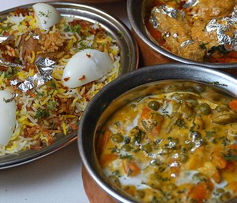
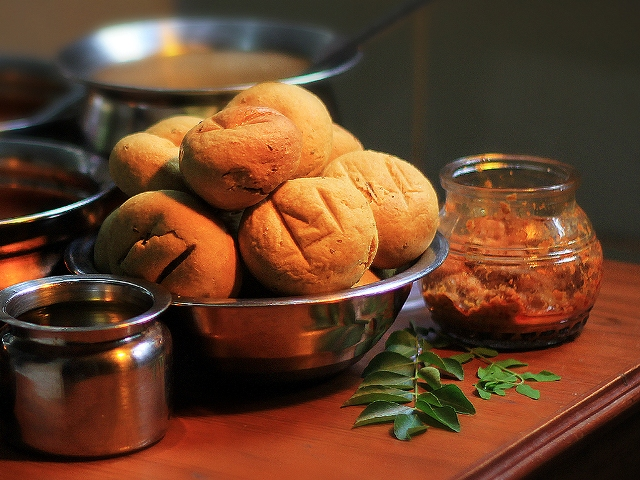
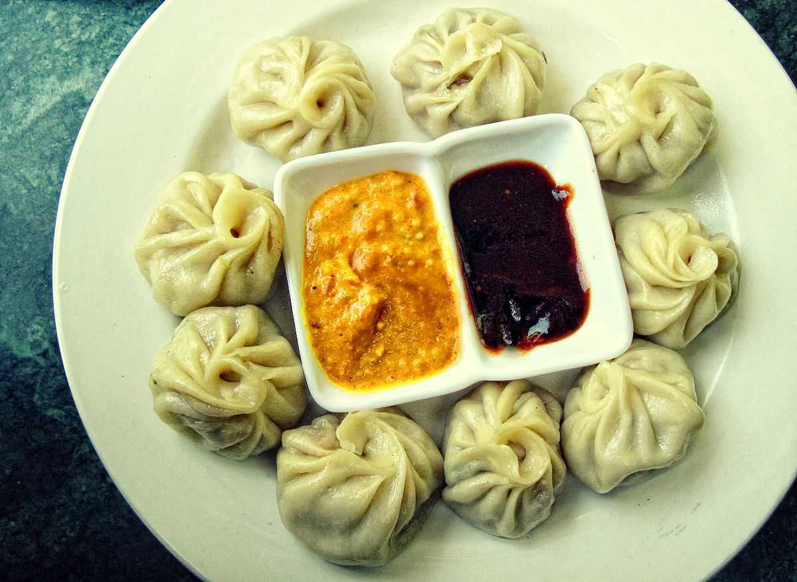
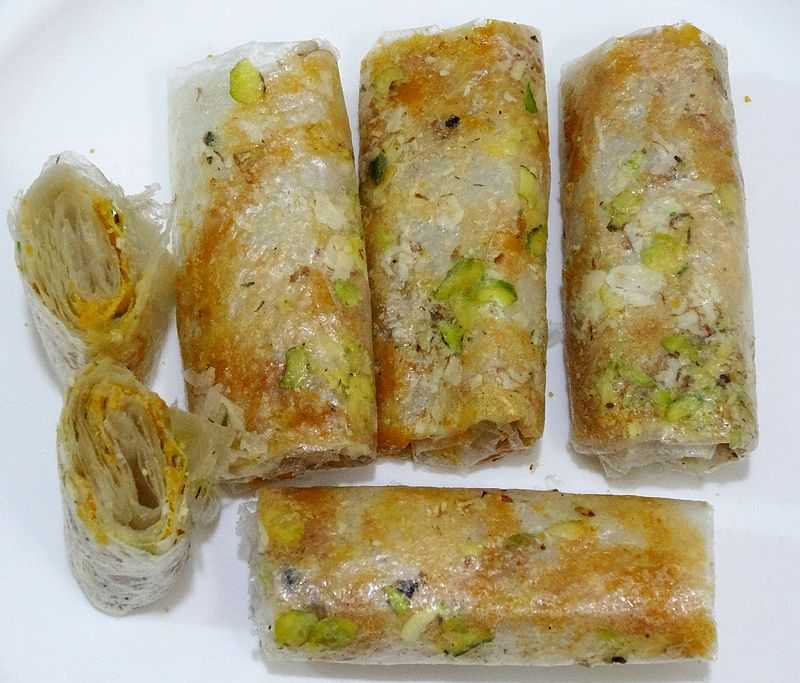

let's see some amazing dishes to eat
from all over INDIA
Misal Pav - Maharashtra

Misal Pav is quintessentially from Pune and is one of the most popular Maharashtrian breakfast, snack or
even brunch. It is a street food popularly found in Mumbai. It has a spicy and tangy lentil curry which is
made with moth beans and is served with Pav bread. At times, it is eaten with yoghurt to lessen the spice.
Although it is a breakfast food but Maharashtrians enjoy it at time of the day.
Makki di Roti Sarson da Saag - Punjab

Makki di Roti and Sarson da Saag make for the staple food in North India especially in the state of
Punjab. This traditional Indian dish may not look very enticing at first, but it has an authentic flavour
to it, and it is rich in nutritive value. Accompany it with a glass of lassi and one has the perfect
combination for a healthy and fulfilling lunch.
Dhokla - Gujarat

Dhokla is an authentic snack which has originated from the state of Gujarat. This traditional food item is
prepared out of gram flour and chana dal. Plus it is a reasonably easy recipe which can be prepared
quickly within half an hour. Dhokla coupled with some chilli paste and chutney makes for the perfect snack
to enjoy with friends over gossiping sessions.
Litti Chokha - Bihar

The lip-smacking taste of Litti Chokha, savoured by one and all, needs no introduction. It is your grand
welcome to the food of Bihar, in all its ghee-dripping glory. It consists of wheat and sattu with spices,
kneaded into round spicy balls, dipped in ghee. The texture of Litti along with the crunchy crust makes it
a foodie’s delight. Chokha is prepared by mashing boiled vegetables (most common being potatoes, brinjal,
tomatoes), adding spices and chopped onion, garlic etc and served with Litti as a complimentary delicacy.
Dhaam - Himachal Pradesh

Dhaam is a complete food that along with a great taste promises a healthy dose of nutrients. The dish
includes dal, rajma, rice, curd, boor ki Kadi and is very well complemented with gur (jaggery). Dhaam is a
plate full of delicious delicacies that are a must-serve on the occasions and festivals. The distinctive
feature about this dish is that it is prepared by special chefs known as ‘botis’. To grab the best taste
of Dhaam you must visit Himachal during festivals.
Hyderabadi Biryani - Telangana

Visit and eat
Thanks to the major influence of Nizams in the state, Hyderabadi Biryani has come to be known worldwide as
one of India’s jeweled food items. It is of two types; Kachchi gosht ki biryani and Pakki biryani.
Marinated meat is cooked in layers of rice in a big handi which is covered with flat dough that eventually
rises due to heat; indicating that the biryani is ready to be devoured.
Daal Bhaati Churma - Rajasthan

Visit and eat
This famous Rajasthani dish needs no introduction. Dal bati churma is synonymous to Rajasthan; known for
its crunchy batis, dipped in ghee along with spicy daal and sweet churma. This delicious dish is prepared
using various dals such as Chana dal, mung dal, Urad dal etc.
Momos - Sikkim

Visit and eat
Momos, who doesn't love momos? Sikkim and Momos are complementary to one another. Sikkim is the place that
is going to serve you the best momos you'll ever taste in your life. Believed to be of Tibetan origin and
modulated by the Nepalese cuisine the momos are the lifeline of Sikkim. Momo is a small package of steamed
bun with some fillings. Momo typically consists of two parts - the cover and the filling. The cover is
made of dough made of white flour and water. Sometimes yeast or baking soda is also added to the dough to
enhance the texture of the momos. Originally these momos were made with ground meat fillings, but over the
years a lot of modifications have been made that have made dumplings even better.
Pootha Rekulu

Visit and eat
Pootharekulu, one of the most popular sweet dish in Andhra Pradesh prepared during festivals, religious
occasions. The water-like sweet is made extensively in Attreyapuram, a village in East Godavari district,
AP. This unique saviour is prepared by rice batter, Ghee, and powdered sugar. Also, it is stuffed with
various kinds of dry fruits to enrich the taste.